Results
Marnin Wolfe
2020-Dec-03
Last updated: 2020-12-03
Checks: 7 0
Knit directory: IITA_2020GS/
This reproducible R Markdown analysis was created with workflowr (version 1.6.2). The Checks tab describes the reproducibility checks that were applied when the results were created. The Past versions tab lists the development history.
Great! Since the R Markdown file has been committed to the Git repository, you know the exact version of the code that produced these results.
Great job! The global environment was empty. Objects defined in the global environment can affect the analysis in your R Markdown file in unknown ways. For reproduciblity it’s best to always run the code in an empty environment.
The command set.seed(20200915) was run prior to running the code in the R Markdown file. Setting a seed ensures that any results that rely on randomness, e.g. subsampling or permutations, are reproducible.
Great job! Recording the operating system, R version, and package versions is critical for reproducibility.
Nice! There were no cached chunks for this analysis, so you can be confident that you successfully produced the results during this run.
Great job! Using relative paths to the files within your workflowr project makes it easier to run your code on other machines.
Great! You are using Git for version control. Tracking code development and connecting the code version to the results is critical for reproducibility.
The results in this page were generated with repository version 9718666. See the Past versions tab to see a history of the changes made to the R Markdown and HTML files.
Note that you need to be careful to ensure that all relevant files for the analysis have been committed to Git prior to generating the results (you can use wflow_publish or wflow_git_commit). workflowr only checks the R Markdown file, but you know if there are other scripts or data files that it depends on. Below is the status of the Git repository when the results were generated:
Ignored files:
Ignored: .DS_Store
Ignored: .Rhistory
Ignored: .Rproj.user/
Ignored: analysis/.DS_Store
Ignored: data/.DS_Store
Ignored: output/.DS_Store
Untracked files:
Untracked: data/GEBV_IITA_OutliersRemovedTRUE_73119.csv
Untracked: data/PedigreeGeneticGainCycleTime_aafolabi_01122020.csv
Untracked: data/PedigreeGeneticGainCycleTime_aafolabi_01122020.xls
Untracked: data/iita_blupsForCrossVal_outliersRemoved_73019.rds
Untracked: output/DosageMatrix_IITA_2020Sep16.rds
Untracked: output/GETGV_IITA_ModelADE_twostage_IITA_2020Dec03.csv
Untracked: output/GETGV_IITA_ModelADE_twostage_IITA_2020Dec03_withAccessionYear.csv
Untracked: output/IITA_CleanedTrialData_2020Dec03.rds
Untracked: output/IITA_ExptDesignsDetected_2020Dec03.rds
Untracked: output/Kinship_AA_IITA_2020Sep16.rds
Untracked: output/Kinship_AD_IITA_2020Sep16.rds
Untracked: output/Kinship_A_IITA_2020Sep16.rds
Untracked: output/Kinship_DD_IITA2020Sep16.rds
Untracked: output/Kinship_D_IITA_2020Sep16.rds
Untracked: output/all_iita_metadata_Dec2020.csv
Untracked: output/cvresults_ModelADE_chunk1.rds
Untracked: output/cvresults_ModelADE_chunk2.rds
Untracked: output/cvresults_ModelADE_chunk3.rds
Untracked: output/genomicPredictions_ModelADE_threestage_IITA_2020Sep21.rds
Untracked: output/genomicPredictions_ModelADE_twostage_IITA_2020Dec03.rds
Untracked: output/genomicPredictions_ModelA_threestage_IITA_2020Sep21.rds
Untracked: output/iita_blupsForModelTraining_twostage_asreml_2020Dec03.rds
Untracked: output/iita_trials_NOT_identifiable_Dec2020.csv
Untracked: output/meanGETGVbyYear_IITA_2020Dec03.csv
Untracked: output/trials_uploaded_by_Nharvested_15Sep2020.csv
Untracked: workflowr_log.R
Unstaged changes:
Modified: output/maxNOHAV_byStudy.csv
Note that any generated files, e.g. HTML, png, CSS, etc., are not included in this status report because it is ok for generated content to have uncommitted changes.
These are the previous versions of the repository in which changes were made to the R Markdown (analysis/06-Results.Rmd) and HTML (docs/06-Results.html) files. If you’ve configured a remote Git repository (see ?wflow_git_remote), click on the hyperlinks in the table below to view the files as they were in that past version.
| File | Version | Author | Date | Message |
|---|---|---|---|---|
| Rmd | 9718666 | wolfemd | 2020-12-03 | Refresh BLUPs and GBLUPs with trials harvested so far. Include |
| html | c97b21b | wolfemd | 2020-11-27 | Build site. |
| Rmd | 1f8cd99 | wolfemd | 2020-11-27 | Added plots of genetic gain for 4 traits. Initial analysis of GEBV vs. |
| html | d72a9ed | wolfemd | 2020-09-21 | Build site. |
| html | 9194239 | wolfemd | 2020-09-21 | Build site. |
| Rmd | 97778e7 | wolfemd | 2020-09-21 | Big update. Two types of pipeline to get BLUPs, GEBVs and GETGVs: |
Cross-validation accuracy
Conducted 5-fold x 5-reps of cross-validation (here). Three traits only, MCMDS, logFYLD, DM.
library(tidyverse)
library(magrittr)
cvresults <- readRDS(here::here("output", "cvresults_ModelA_chunk1.rds")) %>% bind_rows(readRDS(here::here("output",
"cvresults_ModelA_chunk2.rds"))) %>% bind_rows(readRDS(here::here("output", "cvresults_ModelA_chunk3.rds"))) %>%
mutate(Model = "A") %>% bind_rows(readRDS(here::here("output", "cvresults_ModelADE_chunk1.rds")) %>%
bind_rows(readRDS(here::here("output", "cvresults_ModelADE_chunk2.rds"))) %>%
bind_rows(readRDS(here::here("output", "cvresults_ModelADE_chunk3.rds"))) %>%
mutate(Model = "ADE"))cvresults %>% select(Trait, repeats, id, VersionOfBLUPs, accGEBV, Model) %>% ggplot(.,
aes(x = Model, y = accGEBV, fill = VersionOfBLUPs)) + geom_boxplot() + theme_bw() +
facet_wrap(~Trait, scales = "free") + scale_fill_viridis_d() + labs(title = "GEBV: Compare 3-stage and 2-stage prediction pipelines")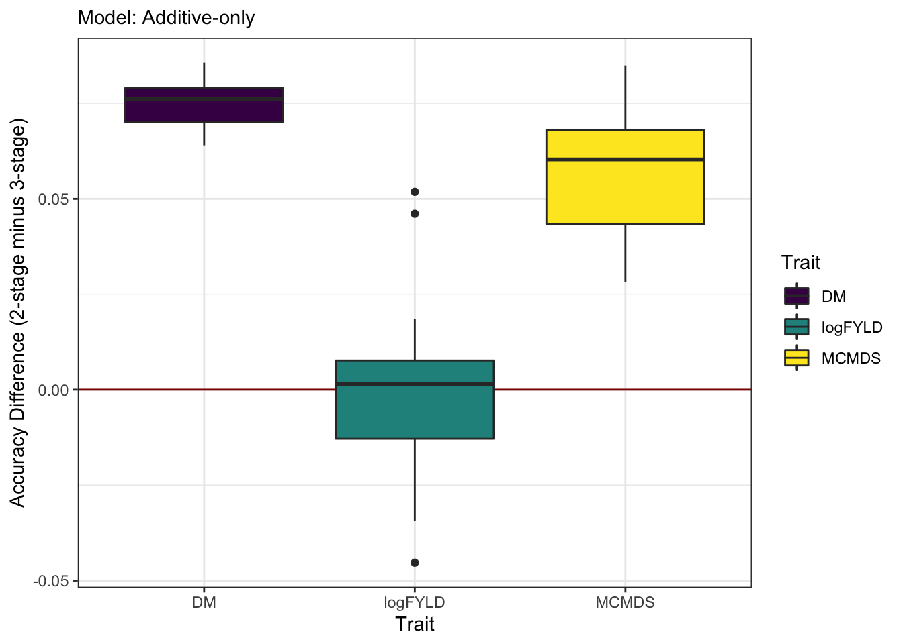
cvresults %>% select(Trait, repeats, id, VersionOfBLUPs, accGETGV, Model) %>% ggplot(.,
aes(x = Model, y = accGETGV, fill = VersionOfBLUPs)) + geom_boxplot() + theme_bw() +
facet_wrap(~Trait, scales = "free") + scale_fill_viridis_d() + labs(title = "GETGV: Compare 3-stage and 2-stage prediction pipelines")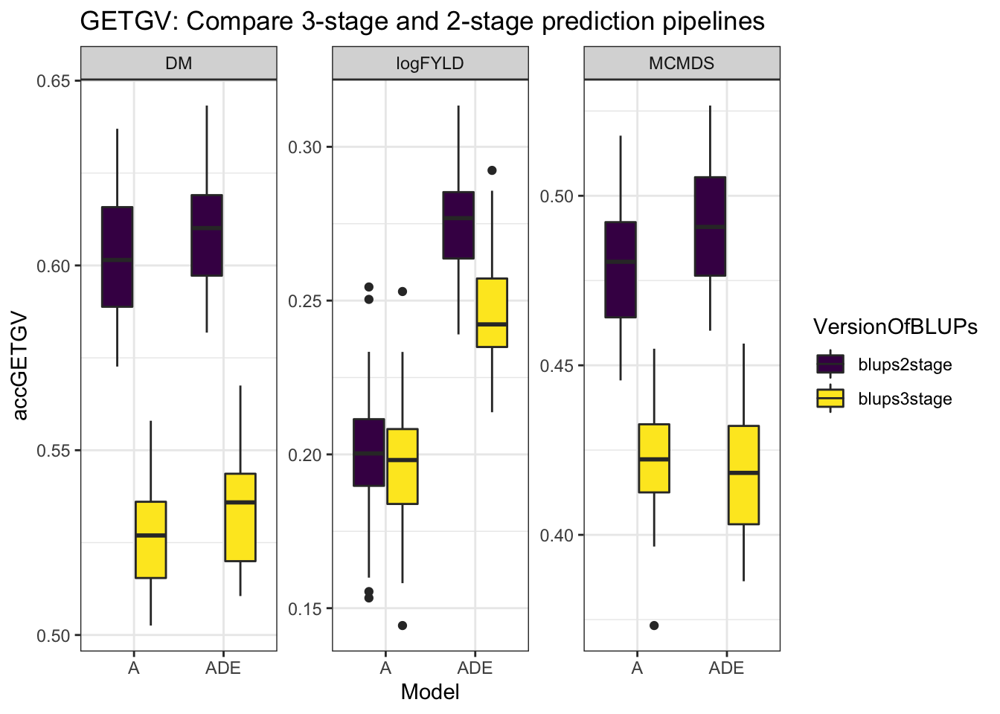
| Version | Author | Date |
|---|---|---|
| c97b21b | wolfemd | 2020-11-27 |
cvresults %>% select(Trait, Model, repeats, id, VersionOfBLUPs, accGEBV) %>% spread(VersionOfBLUPs,
accGEBV) %>% mutate(diffAcc = blups2stage - blups3stage) %>% ggplot(., aes(x = Model,
y = diffAcc, fill = Trait)) + geom_hline(yintercept = 0, color = "darkred") +
geom_boxplot() + theme_bw() + facet_wrap(~Trait, scales = "free") + scale_fill_viridis_d() +
labs(y = "Accuracy Difference (2-stage minus 3-stage)", title = "GEBV")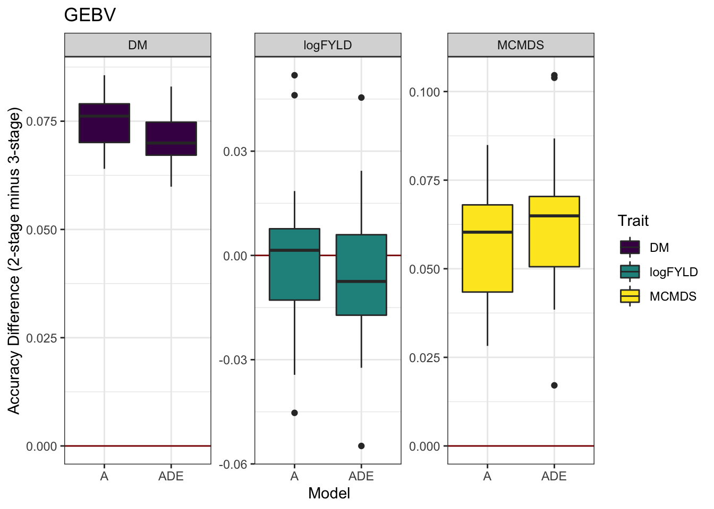
cvresults %>% select(Trait, Model, repeats, id, VersionOfBLUPs, accGETGV) %>% spread(VersionOfBLUPs,
accGETGV) %>% mutate(diffAcc = blups2stage - blups3stage) %>% ggplot(., aes(x = Model,
y = diffAcc, fill = Trait)) + geom_hline(yintercept = 0, color = "darkred") +
geom_boxplot() + theme_bw() + facet_wrap(~Trait, scales = "free") + scale_fill_viridis_d() +
labs(y = "Accuracy Difference (2-stage minus 3-stage)", title = "GETGV")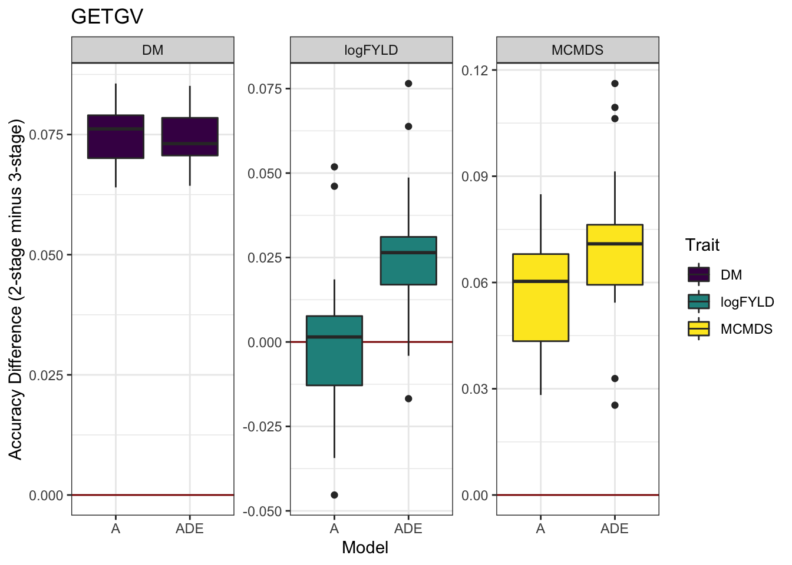
cvresults %>% filter(VersionOfBLUPs == "blups2stage") %>% select(Trait, repeats,
id, VersionOfBLUPs, accGETGV, Model) %>% ggplot(., aes(x = Trait, y = accGETGV,
fill = Model)) + geom_boxplot(color = "gray60", notch = T) + theme_bw() + facet_wrap(~Trait,
scales = "free") + scale_fill_viridis_d() + labs(title = "Compare accuracy: models A vs. ADE")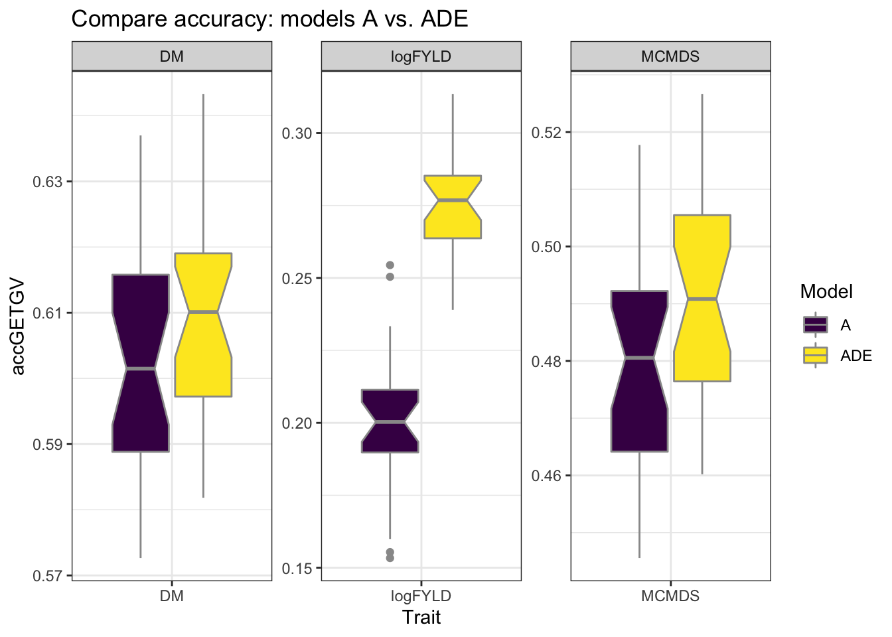
Genetic Gain
September 2020
library(tidyverse)
library(magrittr)
iita_gebvs <- read.csv(here::here("output", "GEBV_IITA_ModelA_twostage_IITA_2020Sep21.csv"),
stringsAsFactors = F)
traits <- c("DM", "logFYLD", "logTOPYLD", "MCMDS")
iita_gebvs %>% select(GID, GeneticGroup, any_of(traits)) %>% pivot_longer(cols = any_of(traits),
names_to = "Trait", values_to = "GEBV") %>% group_by(Trait, GeneticGroup) %>%
summarize(meanGEBV = mean(GEBV), stdErr = sd(GEBV)/sqrt(n()), upperSE = meanGEBV +
stdErr, lowerSE = meanGEBV - stdErr) %>% ggplot(., aes(x = GeneticGroup,
y = meanGEBV, fill = Trait)) + geom_bar(stat = "identity", color = "gray60",
size = 1.25) + geom_linerange(aes(ymax = upperSE, ymin = lowerSE), color = "gray60",
size = 1.25) + facet_wrap(~Trait, scales = "free_y", ncol = 1) + theme_bw() +
geom_hline(yintercept = 0, size = 1.15, color = "black") + theme(axis.text.x = element_text(face = "bold",
angle = 0, size = 12), axis.title.y = element_text(face = "bold", size = 14),
legend.position = "none", strip.background.x = element_blank(), strip.text = element_text(face = "bold",
size = 14)) + scale_fill_viridis_d() + labs(x = NULL, y = "Mean GEBVs")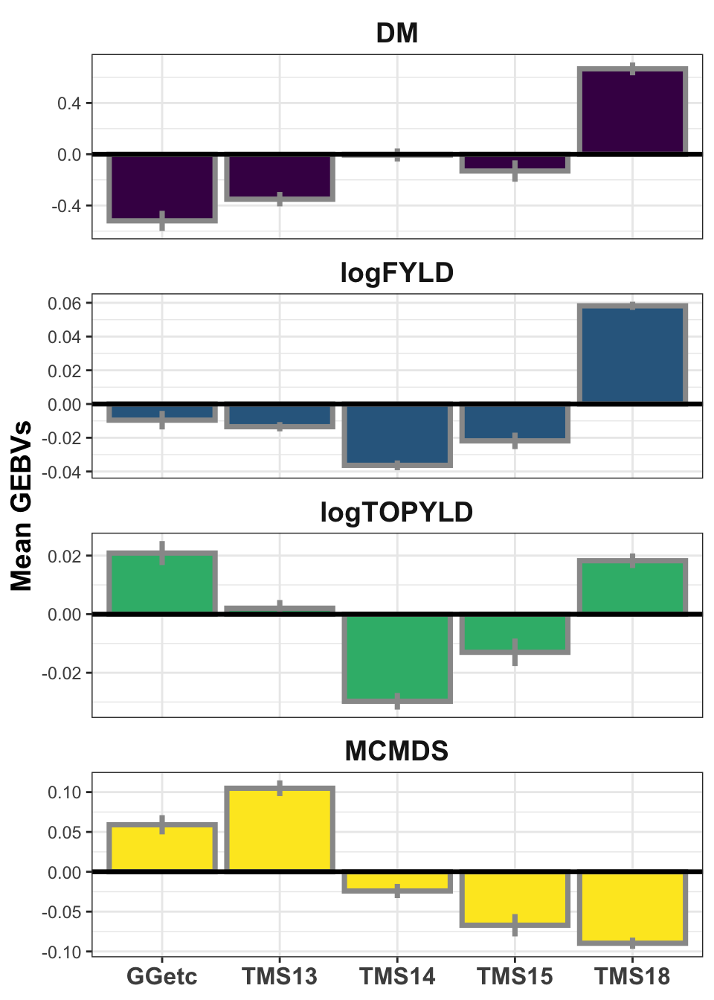
Rate of gain
List of trials from 2020 to Prasad and Ismail… should I download fresh data?
dbdata <- readRDS(here::here("output", "IITA_CleanedTrialData.rds"))
trialsHarvested2019to2020 <- dbdata %>% filter(studyYear >= 2019) %>% group_by(studyYear,
locationName, studyName, plantingDate, harvestDate) %>% summarize(Nhav = sum(!is.na(NOHAV)))
trialsHarvested2019to2020 %>% write.csv(., file = here::here("output", "trials_uploaded_by_Nharvested_15Sep2020.csv"),
row.names = F)September 2020 GEBV
library(tidyverse)
library(magrittr)
iita_gebvs <- read.csv(here::here("output", "GEBV_IITA_ModelA_twostage_IITA_2020Sep21.csv"),
stringsAsFactors = F)
traits <- c("DM", "logFYLD", "logTOPYLD", "MCMDS")
ggcycletime <- readxl::read_xls(here::here("data", "PedigreeGeneticGainCycleTime_aafolabi_01122020.xls"))
table(ggcycletime$Accession %in% iita_gebvs$GID)
FALSE
807 Need germplasmName field from raw trial data to match GEBV and cycle time
library(tidyverse)
library(magrittr)
dbdata <- readRDS(here::here("output", "IITA_ExptDesignsDetected.rds"))
iita_gebvs %<>% left_join(dbdata %>% select(-MaxNOHAV) %>% unnest(TrialData) %>%
distinct(germplasmName, GID)) %>% group_by(GID) %>% slice(1) %>% ungroup()
table(ggcycletime$Accession %in% iita_gebvs$germplasmName)
FALSE TRUE
193 614 table(ggcycletime$Year_Accession)
1973 1974 1975 1976
5 5 1 2
1977 1978 1981 1982
3 2 2 4
1983 1984 1985 1987
1 4 2 2
1988 1989 1990 1991
6 3 2 20
1992 1993 1994 1995
25 20 17 37
1996 1997 1998 1999
55 43 29 33
2000 2001 2002 2003
35 74 25 34
2005 2006 2007 2008
24 21 59 39
2009 2010 2011 2012
37 22 1 4
2013 2014 2015 2016
19 19 26 10
BENIN BEN86052 CARICASS II LIBERIA CARICASS LIBERIA CIAT
1 1 1 1
COTE D'IVOIRE EastAfrica GHANA ANKRA KENYA GUZO
1 15 1 1
KIROBA EastAfrica NRCRI RWANDA CREOLINA SLARI
1 6 1 1
TOGO TOMA 326 TOGO TOMA 393 ZAMBIA Bangweulu
1 1 1 iita_gebvs %<>% left_join(., ggcycletime %>% rename(germplasmName = Accession) %>%
mutate(Year_Accession = as.numeric(Year_Accession)))iita_gebvs %<>% mutate(Year_Accession = case_when(grepl("2013_|TMS13", germplasmName) ~
2013, grepl("TMS14", germplasmName) ~ 2014, grepl("TMS15", germplasmName) ~ 2015,
grepl("TMS18", germplasmName) ~ 2018, !grepl("2013_|TMS13|TMS14|TMS15|TMS18",
germplasmName) ~ Year_Accession))iita_gebvs %>% ggplot(., aes(x = TCHART, y = BCHROMO)) + geom_hex() + theme_bw() +
facet_wrap(~GeneticGroup, nrow = 1) + theme(legend.position = "none")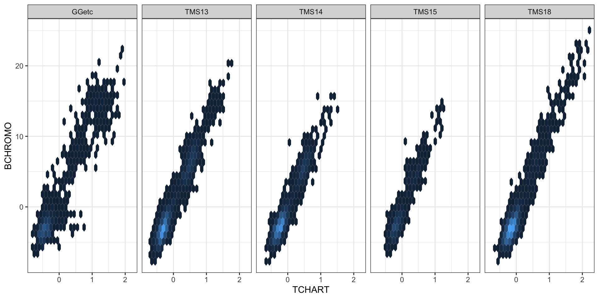
# iita_gebvs %>% select(germplasmName,GeneticGroup,Year_Accession,any_of(traits))
# %>% pivot_longer(cols=any_of(traits),names_to = 'Trait',values_to = 'GEBV') %>%
# ggplot(.,aes(x=Year_Accession,y=GEBV,color=GeneticGroup)) + geom_point() +
# facet_wrap(~Trait,scales='free_y', ncol=1) + theme_bw() + #
# geom_hline(yintercept = 0, size=1.15, color='black') + theme(axis.text.x =
# element_text(face = 'bold',angle = 0, size=12), axis.title.y =
# element_text(face = 'bold',size=14), #legend.position = 'none',
# strip.background.x = element_blank(), strip.text =
# element_text(face='bold',size=14)) + scale_color_viridis_d()
# labs(x=NULL,y='Mean GEBVs')iita_gebvs %>% select(germplasmName, GeneticGroup, Year_Accession, any_of(traits)) %>%
mutate(GeneticGroup = ifelse(Year_Accession >= 2013, "GS", "PreGS")) %>% pivot_longer(cols = any_of(traits),
names_to = "Trait", values_to = "GEBV") %>% group_by(Trait, GeneticGroup, Year_Accession) %>%
summarize(meanGEBV = mean(GEBV), Nclones = n(), stdErr = sd(GEBV)/sqrt(n()),
upperSE = meanGEBV + stdErr, lowerSE = meanGEBV - stdErr) %>% ggplot(., aes(x = Year_Accession,
y = meanGEBV, color = GeneticGroup, size = Nclones)) + geom_point(size = 4) +
geom_smooth(method = lm, se = TRUE) + geom_linerange(aes(ymax = upperSE, ymin = lowerSE),
color = "gray40", size = 1) + facet_wrap(~Trait, scales = "free_y", ncol = 1) +
theme_bw() + theme(axis.text = element_text(face = "bold", angle = 0, size = 14),
axis.title = element_text(face = "bold", size = 16), strip.background.x = element_blank(),
strip.text = element_text(face = "bold", size = 18)) + scale_color_viridis_d()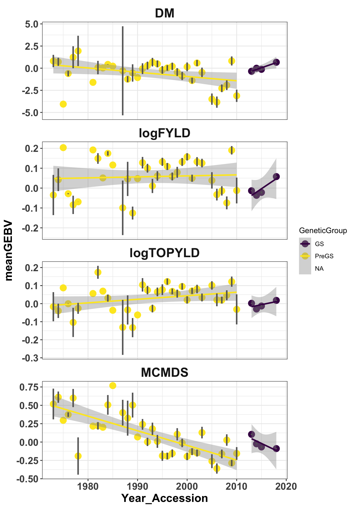
iita_gebvs %>% select(germplasmName, GeneticGroup, Year_Accession, any_of(c(traits,
"TCHART", "BCHROMO"))) %>% mutate(GeneticGroup = ifelse(Year_Accession >= 2013,
"GS", "PreGS")) %>% pivot_longer(cols = any_of(c(traits, "TCHART", "BCHROMO")),
names_to = "Trait", values_to = "GEBV") %>% mutate(Trait = factor(Trait, c(traits,
"TCHART", "BCHROMO"))) %>% group_by(Trait, GeneticGroup, Year_Accession) %>%
summarize(meanGEBV = mean(GEBV), Nclones = n(), stdErr = sd(GEBV)/sqrt(n()),
upperSE = meanGEBV + stdErr, lowerSE = meanGEBV - stdErr) %>% ggplot(., aes(x = Year_Accession,
y = meanGEBV, color = GeneticGroup, size = Nclones)) + geom_point(size = 4) +
geom_smooth(method = lm, se = TRUE) + geom_linerange(aes(ymax = upperSE, ymin = lowerSE),
color = "gray40", size = 1) + facet_wrap(~Trait, scales = "free_y", ncol = 1) +
theme_bw() + theme(axis.text = element_text(face = "bold", angle = 0, size = 14),
axis.title = element_text(face = "bold", size = 16), strip.background.x = element_blank(),
strip.text = element_text(face = "bold", size = 18)) + scale_color_viridis_d()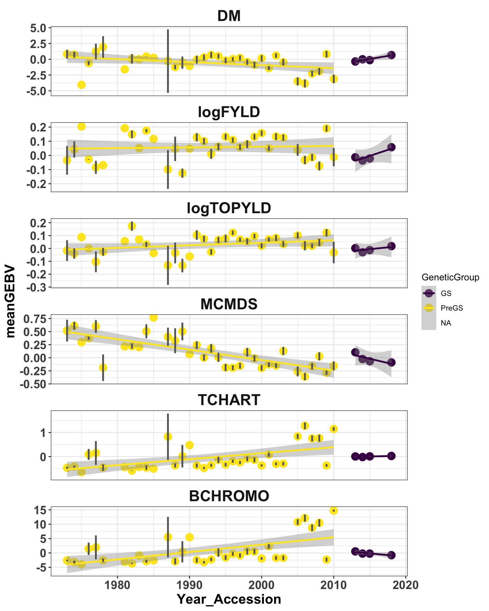
iita_gebvs %>% select(germplasmName, GeneticGroup, Year_Accession, any_of(c(traits,
"TCHART", "BCHROMO"))) %>% mutate(GeneticGroup = ifelse(Year_Accession >= 2013,
"GS", "PreGS")) %>% filter(BCHROMO < 5, TCHART < 0.5) %>% pivot_longer(cols = any_of(c(traits,
"TCHART", "BCHROMO")), names_to = "Trait", values_to = "GEBV") %>% mutate(Trait = factor(Trait,
c(traits, "TCHART", "BCHROMO"))) %>% group_by(Trait, GeneticGroup, Year_Accession) %>%
summarize(meanGEBV = mean(GEBV), Nclones = n(), stdErr = sd(GEBV)/sqrt(n()),
upperSE = meanGEBV + stdErr, lowerSE = meanGEBV - stdErr) %>% ggplot(., aes(x = Year_Accession,
y = meanGEBV, color = GeneticGroup, size = Nclones)) + geom_point(size = 4) +
geom_smooth(method = lm, se = TRUE) + geom_linerange(aes(ymax = upperSE, ymin = lowerSE),
color = "gray40", size = 1) + facet_wrap(~Trait, scales = "free_y", ncol = 1) +
theme_bw() + theme(axis.text = element_text(face = "bold", angle = 0, size = 14),
axis.title = element_text(face = "bold", size = 16), strip.background.x = element_blank(),
strip.text = element_text(face = "bold", size = 18)) + scale_color_viridis_d()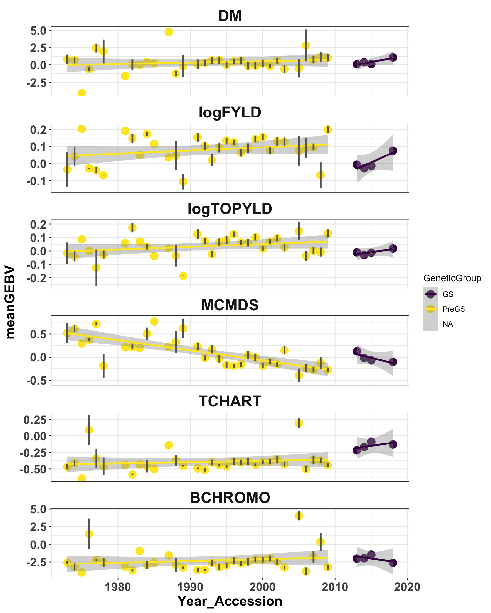
December 2020 GETGV
library(tidyverse); library(magrittr);
iita_getgvs<-read.csv(here::here("output","GETGV_IITA_ModelADE_twostage_IITA_2020Dec03.csv"), stringsAsFactors = F)
#traits<-c("DM","logFYLD","logTOPYLD","MCMDS")
traits<-c("MCMDS","DM","PLTHT","BRNHT1","BRLVLS","HI",
"logDYLD", # <-- logDYLD now included.
"logFYLD","logTOPYLD","logRTNO","TCHART","LCHROMO","ACHROMO","BCHROMO")
ggcycletime<-readxl::read_xls(here::here("data","PedigreeGeneticGainCycleTime_aafolabi_01122020.xls"))
# table(ggcycletime$Accession %in% iita_getgvs$GID)
# FALSE
# 807
# Need germplasmName field from raw trial data to match GEBV and cycle time
dbdata<-readRDS(here::here("output","IITA_ExptDesignsDetected_2020Dec03.rds"))
iita_getgvs %<>%
left_join(dbdata %>%
select(-MaxNOHAV) %>% unnest(TrialData) %>%
distinct(germplasmName,GID)) %>%
group_by(GID) %>%
slice(1) %>%
ungroup()
rm(dbdata)
# table(ggcycletime$Accession %in% iita_getgvs$germplasmName)
# FALSE TRUE
# 193 614
# table(ggcycletime$Year_Accession)
iita_getgvs %<>%
left_join(.,ggcycletime %>%
rename(germplasmName=Accession) %>%
mutate(Year_Accession=as.numeric(Year_Accession)))
iita_getgvs %<>%
mutate(Year_Accession=case_when(grepl("2013_|TMS13",germplasmName)~2013,
grepl("TMS14",germplasmName)~2014,
grepl("TMS15",germplasmName)~2015,
grepl("TMS18",germplasmName)~2018,
!grepl("2013_|TMS13|TMS14|TMS15|TMS18",germplasmName)~Year_Accession))
write.csv(iita_getgvs, file = here::here("output","GETGV_IITA_ModelADE_twostage_IITA_2020Dec03_withAccessionYear.csv"), row.names = F)What is yellow?
iita_getgvs %>% ggplot(., aes(x = TCHART, y = BCHROMO)) + geom_hex() + theme_bw() +
facet_wrap(~GeneticGroup, nrow = 1) + theme(legend.position = "none") + geom_vline(xintercept = 0.5) +
geom_hline(yintercept = 5) + labs(title = "Arbitrary suggested cut-offs for `white` rooted GETGVs",
subtitle = "horiz. and vert. lines")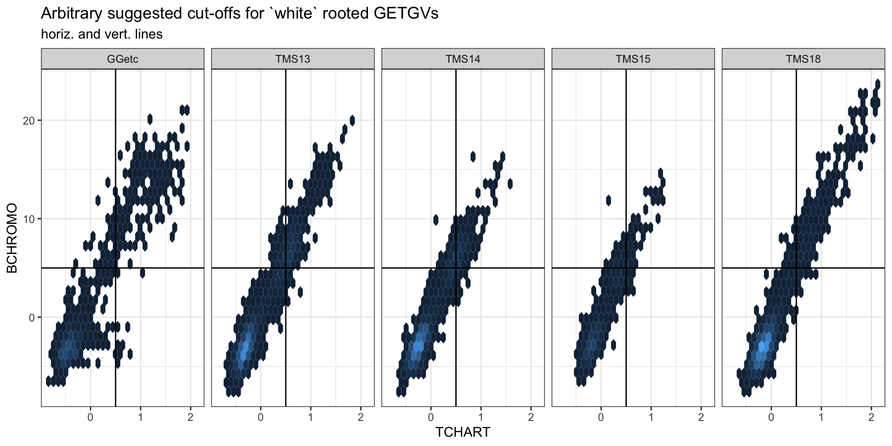 ### Mean GETGV-by-Year
mean_getgvs <- iita_getgvs %>% select(germplasmName, GeneticGroup, Year_Accession,
any_of(traits)) %>% mutate(GeneticGroup = ifelse(Year_Accession >= 2013, "GS",
"PreGS")) %>% pivot_longer(cols = any_of(traits), names_to = "Trait", values_to = "GETGV") %>%
group_by(Trait, GeneticGroup, Year_Accession) %>% summarize(meanGETGV = mean(GETGV),
Nclones = n(), stdErr = sd(GETGV)/sqrt(n()), upperSE = meanGETGV + stdErr, lowerSE = meanGETGV -
stdErr) %>% ungroup()
write.csv(mean_getgvs, file = here::here("output", "meanGETGVbyYear_IITA_2020Dec03.csv"),
row.names = F)# traits<-c('logDYLD','logFYLD','MCMDS','DM','TCHART','BCHROMO')
traits <- c("logDYLD", "logFYLD", "MCMDS", "DM", "TCHART", "BCHROMO", "PLTHT", "BRNHT1",
"BRLVLS", "HI", "logTOPYLD", "logRTNO", "LCHROMO", "ACHROMO")Plot all germplasm vs. year
mean_getgvs %>% mutate(Trait = factor(Trait, traits)) %>% ggplot(., aes(x = Year_Accession,
y = meanGETGV, color = GeneticGroup, size = Nclones)) + geom_point(size = 4) +
geom_smooth(method = lm, se = TRUE) + geom_linerange(aes(ymax = upperSE, ymin = lowerSE),
color = "gray40", size = 1) + facet_wrap(~Trait, scales = "free_y", ncol = 2) +
theme_bw() + theme(axis.text = element_text(face = "bold", angle = 0, size = 14),
axis.title = element_text(face = "bold", size = 16), strip.background.x = element_blank(),
strip.text = element_text(face = "bold", size = 18)) + scale_color_viridis_d()
Plot “white” germplasm vs. year
mean_getgvs_whiteroots <- iita_getgvs %>% select(germplasmName, GeneticGroup, Year_Accession,
any_of(traits)) %>% mutate(GeneticGroup = ifelse(Year_Accession >= 2013, "GS",
"PreGS")) %>% filter(BCHROMO <= 5, TCHART <= 0.5) %>% pivot_longer(cols = any_of(traits),
names_to = "Trait", values_to = "GETGV") %>% group_by(Trait, GeneticGroup, Year_Accession) %>%
summarize(meanGETGV = mean(GETGV), Nclones = n(), stdErr = sd(GETGV)/sqrt(n()),
upperSE = meanGETGV + stdErr, lowerSE = meanGETGV - stdErr) %>% ungroup()mean_getgvs_whiteroots %>% mutate(Trait = factor(Trait, traits)) %>% ggplot(., aes(x = Year_Accession,
y = meanGETGV, color = GeneticGroup, size = Nclones)) + geom_point(size = 4) +
geom_smooth(method = lm, se = TRUE) + geom_linerange(aes(ymax = upperSE, ymin = lowerSE),
color = "gray40", size = 1) + facet_wrap(~Trait, scales = "free_y", ncol = 2) +
theme_bw() + theme(axis.text = element_text(face = "bold", angle = 0, size = 14),
axis.title = element_text(face = "bold", size = 16), strip.background.x = element_blank(),
strip.text = element_text(face = "bold", size = 18)) + scale_color_viridis_d()
sessionInfo()R version 4.0.2 (2020-06-22)
Platform: x86_64-apple-darwin17.0 (64-bit)
Running under: macOS Catalina 10.15.7
Matrix products: default
BLAS: /Library/Frameworks/R.framework/Versions/4.0/Resources/lib/libRblas.dylib
LAPACK: /Library/Frameworks/R.framework/Versions/4.0/Resources/lib/libRlapack.dylib
locale:
[1] en_US.UTF-8/en_US.UTF-8/en_US.UTF-8/C/en_US.UTF-8/en_US.UTF-8
attached base packages:
[1] stats graphics grDevices utils datasets methods base
other attached packages:
[1] magrittr_2.0.1 forcats_0.5.0 stringr_1.4.0 dplyr_1.0.2
[5] purrr_0.3.4 readr_1.4.0 tidyr_1.1.2 tibble_3.0.4
[9] ggplot2_3.3.2 tidyverse_1.3.0 workflowr_1.6.2
loaded via a namespace (and not attached):
[1] Rcpp_1.0.5 lattice_0.20-41 lubridate_1.7.9.2 here_1.0.0
[5] ps_1.4.0 assertthat_0.2.1 rprojroot_2.0.2 digest_0.6.27
[9] R6_2.5.0 cellranger_1.1.0 backports_1.2.0 reprex_0.3.0
[13] evaluate_0.14 httr_1.4.2 pillar_1.4.7 rlang_0.4.9
[17] readxl_1.3.1 rstudioapi_0.13 whisker_0.4 hexbin_1.28.1
[21] Matrix_1.2-18 rmarkdown_2.5 splines_4.0.2 labeling_0.4.2
[25] munsell_0.5.0 broom_0.7.2 compiler_4.0.2 httpuv_1.5.4
[29] modelr_0.1.8 xfun_0.19 pkgconfig_2.0.3 mgcv_1.8-33
[33] htmltools_0.5.0 tidyselect_1.1.0 fansi_0.4.1 viridisLite_0.3.0
[37] crayon_1.3.4 dbplyr_2.0.0 withr_2.3.0 later_1.1.0.1
[41] grid_4.0.2 nlme_3.1-150 jsonlite_1.7.1 gtable_0.3.0
[45] lifecycle_0.2.0 DBI_1.1.0 git2r_0.27.1 formatR_1.7
[49] scales_1.1.1 cli_2.2.0 stringi_1.5.3 farver_2.0.3
[53] fs_1.5.0 promises_1.1.1 xml2_1.3.2 ellipsis_0.3.1
[57] generics_0.1.0 vctrs_0.3.5 tools_4.0.2 glue_1.4.2
[61] hms_0.5.3 yaml_2.2.1 colorspace_2.0-0 rvest_0.3.6
[65] knitr_1.30 haven_2.3.1